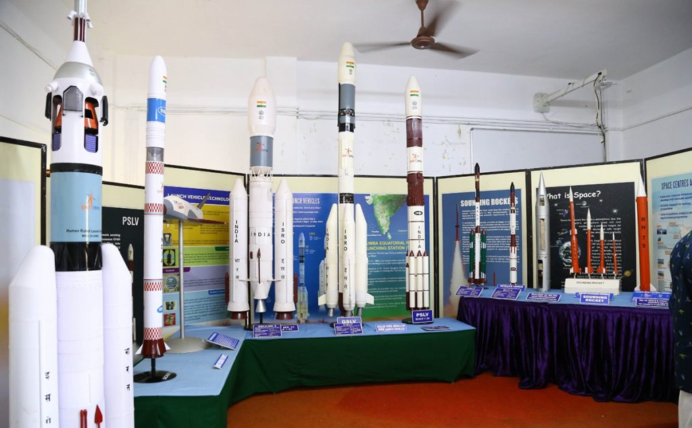
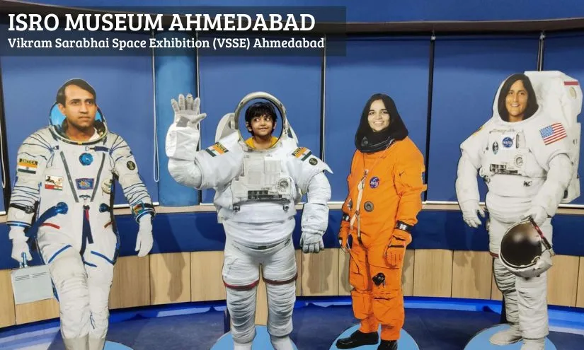

PORTFOLIO


 
Hello, I'm Pallab Biswas, a first year undergraduate student pursuing B.Tech degree in Mechanical Department at IIT Kharagpur. I am deeply passionate about Robotics,Web Development and Space Exploration and have a keen interest in coding related contents.My coursework and personal projects have allowed me to explore these fields. which has fueled my curiosity and commitment to web development and space Exploration. With a strong foundation in web development,space related knowledge,good communication and leadership skills I have excelled in Codecanvas workshop and National Students' Space Challenge. Beyond my academic pursuits, I have been actively involved in Space Technology Society and National Service Scheme. Serving as junior coordinator in NSSC has allowed me to develop valuable leadership and teamwork skills. My academic journey has prepared me for hard working,patienceful and deep concentrator that will be essential in achieving my future goals.
Engaging with a space-related organization has honed my skills in precision and attention to detail, crucial for aerospace endeavors. Through collaborative projects, I've cultivated strong teamwork and communication skills, navigating complex challenges in a dynamic environment. Exposure to cutting-edge technologies has enhanced my adaptability and problem-solving abilities, while the interdisciplinary nature of space initiatives has fostered a holistic approach to innovation, fostering creativity and resilience in the face of intricate scientific and engineering challenges.
In my involvement with social service organizations, I've developed empathy, active listening, and interpersonal skills through meaningful interactions with diverse communities. Leadership roles have honed my organizational and project management abilities, fostering a commitment to social impact. Collaborative initiatives have enhanced teamwork and adaptability, while addressing community needs has strengthened problem-solving and resourcefulness. Overall, my experiences in social service have cultivated a holistic skill set focused on compassion, collaboration, and community-driven solutions.
My immersion in web development has refined proficiency in HTML, CSS, and JavaScript, enabling me to craft responsive and visually appealing websites. Experience with frameworks like React has bolstered my problem-solving skills, while collaboration on diverse projects has enhanced teamwork and adaptability. Continuous learning in this dynamic field hones my versatility and coding expertise.